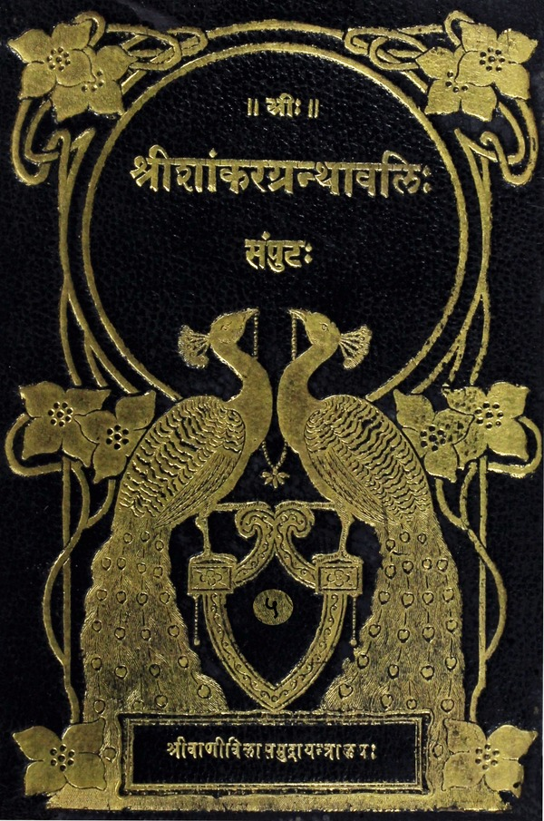

श्रीशांकरग्रन्थावलिः
संपुटः १ - २०
Home
About
Concluding Note
T. K. Balasubramaniam
Superhuman efforts of a savant
Prema Nandakumar
Views on the Sri Vani Vilas Press
His (Sri TKB’s) aim
Volumes
मुण्डकोपनिषद्भाष्यम्
प्रथमं मुण्डकम्
प्रथमः खण्डः
केवलब्रह्मविद्याया मोक्षसाधनत्वकथनपूर्वकमुपनिषच्छब्दनिर्वचनम्
विद्यासंप्रदायप्रवर्तकानां पारम्पर्यनिर्देशः
अङ्गिरसं प्रति शौनकस्य प्रश्नः
विद्याया द्वैविध्यप्रदर्शनपूर्वकं प्रश्नप्रत्युत्तरासंगतिमाशङ्क्य तत्समाधानम्
अपरविद्याप्रदर्शनम्
परविद्याप्रदर्शनम्
दृष्टान्तमुखेनाक्षरस्य भूतयोनित्वोपन्यासः
द्वितीयः खण्डः
वृत्तमनूद्य द्वितीयखण्डतात्पर्यप्रदर्शनम्
सर्वकर्मणां प्राथम्यादपरविद्याविषयभूताग्निहोत्रप्रदर्शनम्
यथोक्तकारिणां यजमानानां सूर्यरश्मिद्वारेन्द्रलोकप्राप्तिकथनम्
ज्ञानरहितस्य कर्मणोऽसारफलत्वप्रदर्शनपुरःसरं कर्मिणां निन्दा
सगुणब्रह्मज्ञानसहिताश्रमकर्मिणां फलं संसारगोचरमेवेति प्रदर्शनम्
विरक्तस्यैव ब्रह्मविद्यायामधिकार इति प्रदर्शनम्
द्वितीयं मुण्डकम्
प्रथमः खण्डः
उत्तरखण्डस्य तात्पर्यमुक्त्वा अक्षरस्य जीवोत्पत्तिप्रलयनिमित्तत्वमुपाधिप्रयुक्तमेवेति तात्पर्यवर्णनम्
अक्षरस्याप्राणादिमत्त्वप्रदर्शनम्
अक्षरस्य सर्वं प्रति कारणत्वं प्रदर्श्य कस्मिन्नु भगवो विज्ञात इति प्रश्नस्योत्तरप्रदर्शनम्
द्वितीयः खण्डः
सकृदुपदेशमात्रेणाद्वितीयं ब्रह्म सम्यक्प्रतिपत्तुमशक्तस्य दर्शनोपायप्रदर्शनम्
परमात्मज्ञानस्य फलवचनम्
ज्योतिषां ज्योतिरिति पूर्वमुक्तस्य प्रपञ्चनम्
निगमनस्थानीयेन मन्त्रेण पूर्वोक्तस्यार्थस्योपसंहारः
तृतीयं मुण्डकम्
प्रथमः खण्डः
वृत्तानुवादपूर्वकं प्रकृतखण्डतात्पर्यमुक्त्वा परमार्थवस्त्ववधारणम्
ब्रह्मविद्वरिष्ठस्वरूपोपन्यासः
सम्यग्ज्ञानसहकारिसाधनविधानम्
असाधारणतदुपलब्धिसाधनान्तरविधानम्
विदुषः सर्वात्मत्वादेव सर्वावाप्तिलक्षणफलप्रदर्शनम्
द्वितीयः खण्डः
कामत्यागस्य प्रधानसाधनत्वेन मुमुक्षं प्रति प्रदर्शनम्
अभेदानुसंधानलक्षणप्रार्थनव्यतिरिक्तश्रवणादिभिरात्मनो लभ्यत्वकथनम्
माण्डूक्योपनिषत्कारिकाभाष्यम्
आगमप्रकरणम्
विधिमुखेन निषेधमुखेन च वस्तुप्रतिपादनपरमङ्गलरचना
विषयप्रयोजनाद्यनुबन्धोपन्यासमुखेन प्रकरणचतुष्टयस्य प्रत्येकमसंकीर्णप्रमेयसूचनम्
ओंकारस्य सर्वात्मत्वप्रतिपादनम्
वृत्तानुवादपूर्वकमुत्तरवाक्यस्य सफलं तात्पर्यवर्णनम्
निरवयवस्य ब्रह्मणः काल्पनिकमुपायोपेयभूतं पादचतुष्टयमविरुद्धमित्यभिप्रेत्याद्यपादव्युत्पादनम्
द्वितीयपादव्युत्पादनम्
तृतीयपादव्युत्पादनम्
प्राज्ञस्यान्तर्यामिणा सहाभेदं गृहीत्वा सर्वेश्वरत्वादिविशेषान्तरप्रदर्शनम्
माण्डूक्योपनिषदर्थाविष्करणपराणां श्लोकानामर्थविवरणम्
तुरीयपादव्युत्पादनम्
नान्तःप्रज्ञत्वादिश्रुत्युक्तार्थविवरणपरश्लोकानामर्थविवरणम्
वैतथ्यप्रकरणम्
पूर्वोत्तरप्रकरणयोः पौर्वापर्यप्रदर्शनपुरःसरं द्वैतस्य वैतथ्यप्रतिपादनय दृष्टान्तसिद्ध्यर्थं वृद्धसंमतिप्रदर्शनम्
वैतथ्यमेव साधयितुं पञ्चावयववाक्योपन्यासः
साध्यवैकल्यमाशङ्क्य तत्परिहारः
सर्वमिथ्यात्वे प्रमात्रादिव्यवहारानुपपत्तिमाशङ्क्य तत्परिहारः
जीवकल्पनानिमित्तस्य सदृष्टान्तं निरूपणम्
युक्त्या प्रसाधिते मिथ्यात्वे वेदान्तप्रमाणप्रदर्शनम्
प्रकरणार्थोपसंहरणपूर्वकं द्वैतस्यावस्तुत्वादुत्पत्त्याद्यसंभवप्रदर्शनम्
अद्वैतप्रकरणम्
श्रुत्यनुग्रहीततर्कावष्टम्भादप्यद्वैतं व्यवस्थापयितुमुपास्योपासकभेददृष्ट्यपवदनम्
जीवभेदप्रतीतेर्गौणत्वमादय जीवसृष्टिश्रुतिविरोधपरिहारः
अद्वैतस्य जीवप्रलयश्रुत्यविरोधसमर्थनम्
अद्वैतस्य व्यवस्थानुपपत्त्या विरोधमाशङ्क्य तत्परिहारः
कर्मज्ञानकाण्डवाक्यविरोधे ज्ञानकाण्डवाक्यार्थस्यैकत्वस्यैव सामञ्जस्यनिर्धारणम्
उपासनाविध्यनुपपत्तिविरोधपरिहारः
स्वयूथ्यपक्षमनुभाष्य तद्दूषणम्
अविक्रिये ब्रह्मणि हानोपादानयोरसंभवप्रदर्शनपुरःसरमतो वक्ष्यामीत्युपक्रान्तस्योपसंहारः
मनोनिग्रहोपायप्रदर्शनम्
शास्त्रयुक्तिभ्यां निर्धारितस्यार्थस्योपसंहारः
अलातशान्तिप्रकरणम्
उपयुक्तार्यमनूद्य प्रकरणतात्पर्यप्रदर्शनम्
अद्वैतदर्शनस्याविवादत्वविशदीकरणाय द्वैतिनां विवादोपन्यासः
हेतुफलयोः कार्यकारणभावप्रतिषेधः
आत्मनः संसारमोक्षयोः परमार्थसद्भाववादिनां दोषोपन्यासः
भूतदर्शनोपसंहारः
स्वप्रक्रिययात्मतत्त्वमवधारयितुमवस्थात्रयोपन्यासः
ऎतरेयोपनिषद्भाष्यम्
प्रथमोऽध्यायः
कर्मकाण्डार्थ संक्षेपेणानुद्य केवलात्मपरतयोपनिषद्विवरणम्
समुच्चयवादिमतोपन्यासस्तत्खण्डनं च
इन्द्रियाणां तदाभिमानिदेवतानां च सृष्टिमुक्त्वा क्षुप्तिपासयोः सृष्टिकथनम्
भोग्यसृष्टिप्रक्रमः
द्वितीयोऽध्यायः
विवक्षितार्थसिद्धये विस्तरेण विचारोपन्यासः
तृतीयोऽध्यायः
ब्रह्मात्मविदः फलप्रदर्शनम्

उपनिषद् भाष्यम्
(Upanishad Bhashya)